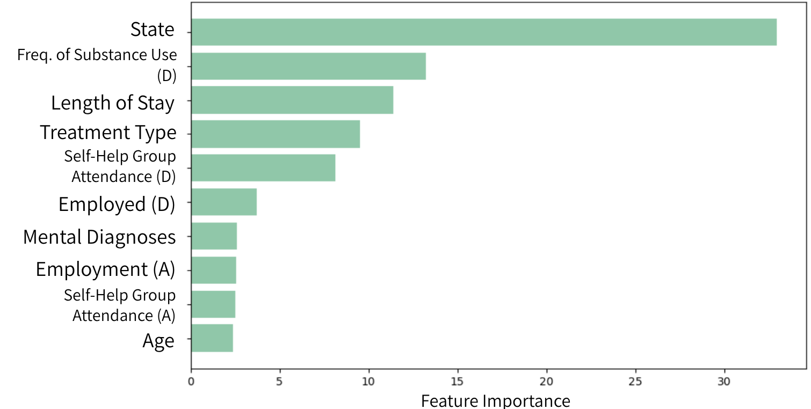
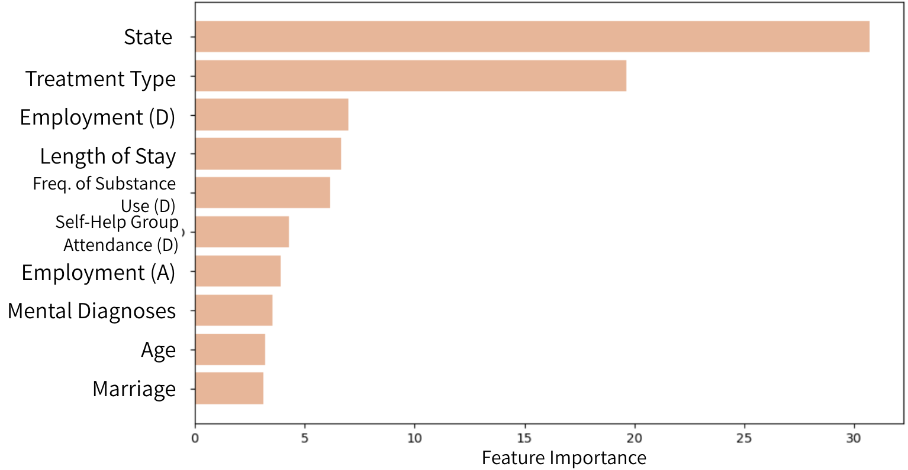
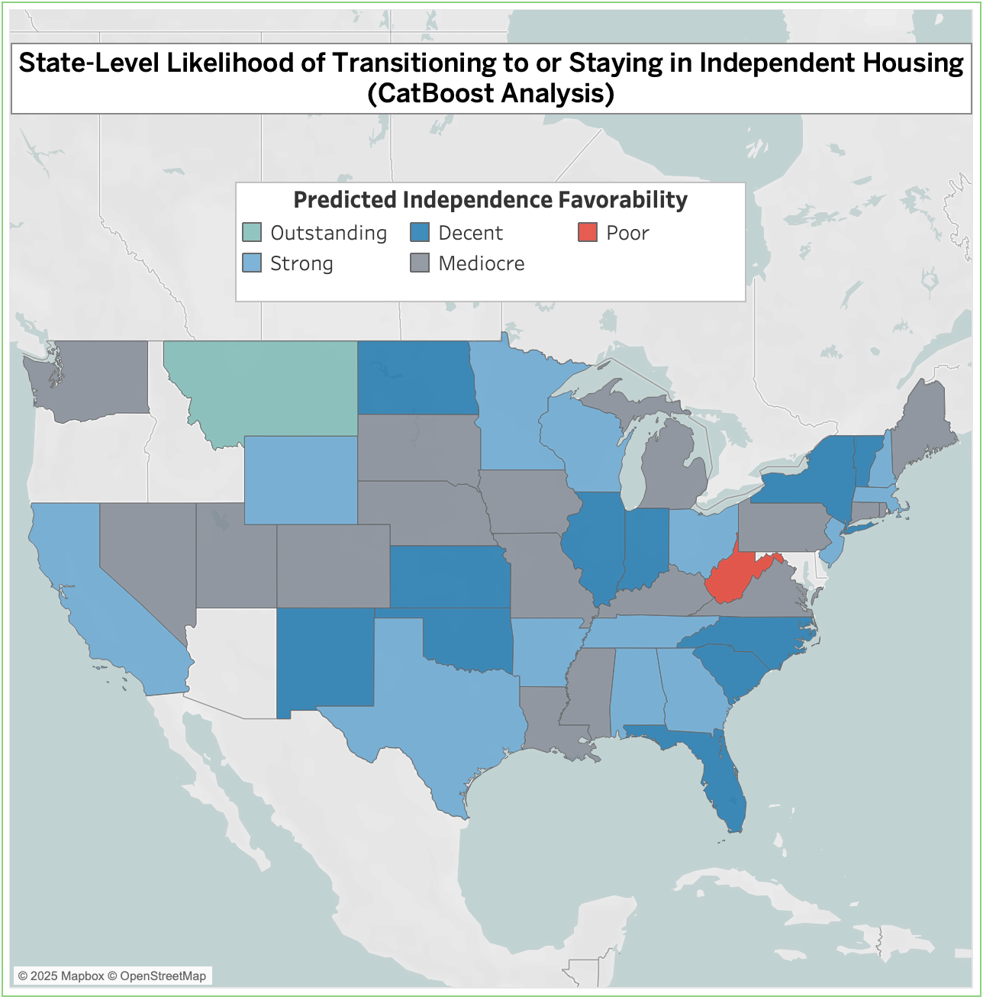
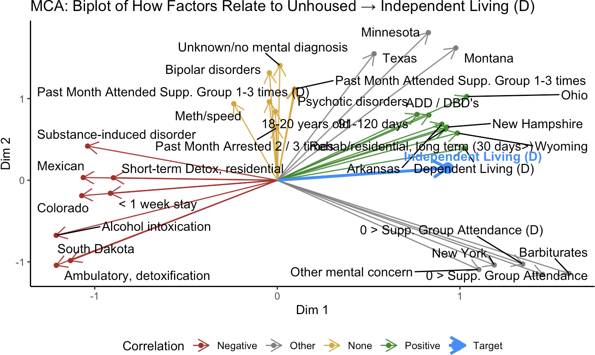
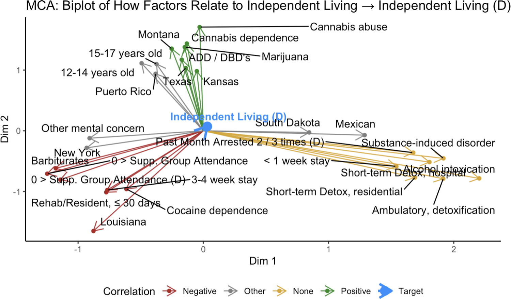

Housing Status Changes While in Substance Abuse Treatment (Senior Capstone)
Project Overview
This project examines how individuals completing substance abuse treatment change—or fail to change—their housing status between admission and discharge. Using the national TEDS-D 2021 dataset, I focus on two groups: those unhoused at admission and those in independent living. The central question was: What distinguishes people whose housing status changes from those whose does not?
I compared individuals who remained unhoused with those who transitioned into independent living, and also noting the small subset who became unhoused after living independently. Analyses were performed in R, with Python used for modeling (CatBoost, SHAP) and Tableau for visualization.
Background & Motivation
This project was completed as part of the Projects in Data Science capstone course as part of a group of 3. Each of us selected a quality of life predictor (housing, employment, and substance use frequency) and investigated how each changed under the guidance of 2 experts with experience in working with substance abuse or similar issues.
Identifying characteristics linked to positive housing transitions can guide policymakers and providers toward interventions that promote stability. For example, while “chronically homeless” (the term for people unhoused 1> year(s) and have substance issues) pessimistically implies permanence, the exploratory plot below shows nearly *40% of unhoused individuals in the dataset transitioned to housing (HUD, 2015). Why do some change while others remain the same? This project addresses that question for both groups.
Substance Abuse Facility Treatment Data
- Source: TEDS‑D 2021 (SAMHSA)
- Scope: ~370,000 anonymized client records, 76 variables (broadly can be categorized as demographic, treatment related (what services the clients received), and non-treatment related (answers that might come up in an intake form or police database – diagnoses, prior treatment, age of first substance use, etc.))
- Inclusion criteria: Age 12+, completed treatment episode, public facilities only, all states excluding Delaware, Idaho, and Oregon
Classification + Dimension Reduction Tools (Methodology)
To analyze, I used 2 complementary tools:
Classification (CatBoost) — Supervised learning to classify whether a person changed versus remained in housing status between admission and discharge.
Dimensional Reduction (MCA) — Dimensional reduction to summarize multivariate categorical structure and highlight which categorical levels pull observations toward changing or remaining.
Because unhoused and housed individuals differ significantly, 2 separate models were trained for clearer insights.
Visual Results and Interpretations
CatBoost Models
CatBoost is a gradient boosting model (like LightGM and XGBoost) that has a special CatBoost target encoding that makes it shine above the others for this project. Its unique target encoding allows for more effective and efficient predictions with categorical data, which is the datatype of 97% of the columns.
Results (Click image for feature importance insights)

Results (Click image for feature importance insights)


The predicted probabilities from both Averaged CatBoost predictions by state: Southeast and South-Central states show low transition rates into housing but high retention once independent. The Midwest shows the reverse. Montana and West Virginia are notable outliers.
Prediction Takeaways
- Change is predictable – CatBoost models strongly predict housing change, linking client and treatment attributes to short-term outcomes.
- State matters most – State of treatment dominates importance rankings, likely reflecting policies, housing availability, funding, and reporting practices.
- Employment matters – Employment at admission and discharge is critical for housing outcomes.
- Substance use frequency – Frequency of use in the week before discharge is highly predictive.
The Importance of State and Drugs (Multiple Correspondence Analysis)
Multiple Correspondence Analysis (MCA) is a statistical technique used to analyze and visualize relationships within categorical data. By reducing data with many features / dimensions into a lower-dimensional space, MCA helps identify patterns, associations, and underlying structures that might not be immediately obvious. It’s particularly useful for revealing granular relationships between the specific levels of categorical variables.

Evidently, certain states and treatment duration strongly influence housing outcomes. What’s more, alcohol intoxication and substance-induced disorders are associated with remaining unhoused.

Drug type significantly influences likelihood of independent living at discharge. Individuals with cannabis or alcohol-related disorders tend to have more favorable outcomes than those with harder substances such as cocaine or barbiturates (Substance Abuse / Chemical Dependency, 2024).
Consistent Trends Across Groups
State influence is dominant – Strong associations in both supporting and opposing stability.
Effective treatment – Longer stays, residential programs, and self-help participation improve outcomes.
Age minimal – Except ages 18–20, age has little effect.
Psychiatric disorders negligible – Only substance use disorders impact housing.
Certain substances harmful – Some drugs, especially among initially housed individuals, increase risk.
Who Were the People Not Included?
- The TEDS‑D only includes episodes that completed treatment — dropouts and transfers are excluded
- Not all public facilities are present, and private/non‑funded services are absent
- Certain states have different policies for who is recorded or not
How Can States Use this Analysis?
- Strengthen post‑treatment housing connections and state‑level funding pathways in states with lower change rates
- Invest in programs that extend effective treatment length and support self‑help or peer support engagement toward discharge
- Integrate employment services into discharge planning as a route toward stable housing
There is Much More that Can be Done
- Link TEDS to longitudinal housing records (if possible) for long‑term outcomes
- Test moderation/interaction models: does state moderate the effect of treatment type or length of stay?
- Build a lightweight web tool for case managers: input client profile → predicted probability and top recommended interventions (e.g., residential, self‑help referral, employment services)
Skills
This project demonstrates my ability to: - Clean and structure large-scale categorical datasets for analysis - Build and interpret machine learning classification models (CatBoost) - Apply dimensionality reduction techniques (MCA) to uncover patterns - Translate statistical results into actionable insights in a social impact domain - Communicate technical findings effectively to both technical and non-technical audiences
Skills Demonstrated: R · Python · Tableau · Data Wrangling · Machine Learning (CatBoost) · SHAP Interpretation · Dimensionality Reduction (MCA) · Data Visualization · Statistical Analysis · Research Communication
Special Thanks
Thank you to Hien-Anh (Avianna) Bui (Team Member), Ethan Caldecott (Team Member), Dr. Jaine Strauss (Expert; Psychology Professor), and Ellie Skelton (Expert; Touchstone Mental Health Executive Director) for their commitment, guidance, and domain expertise.
References
Brubaker, M. D., Amatea, E. A., Torres-Rivera, E., Miller, M. D., & Nabors, L. (2013). Barriers and Supports to Substance Abuse Service Use Among Homeless Adults. Journal of Addictions & Offender Counseling, 34(2), 81–98. https://doi.org/10.1002/j.2161-1874.2013.00017.x
Lundberg, S. (2018). An introduction to explainable AI with Shapley values — SHAP latest documentation. Read the Docs. https://shap.readthedocs.io/en/latest/example_notebooks/overviews/An%20introduction%20to%20explainable%20AI%20with%20Shapley%20values.html
Nicholls, M. J., & Urada, L. A. (2021). Homelessness and polysubstance use: A qualitative study on recovery and treatment access solutions around an urban library in Southern California, USA. Health & Social Care in the Community, 30(1). https://doi.org/10.1111/hsc.13424
Substance Abuse / Chemical Dependency. (2024). John Hopkins Medicine. https://www.hopkinsmedicine.org/health/conditions-and-diseases/substance-abuse-chemical-dependency
Substance Abuse and Mental Health Services Administration. (2023). Treatment Episode Data Set Discharges (TEDS-D) 2021: Public Use File (PUF) Codebook. Rockville, MD: Center for Behavioral Health Statistics and Quality, Substance Abuse and Mental Health Services Administration. Retrieved from https://www.samhsa.gov/data/.
US Department of Housing and Urban Development. (2015). Definition of Chronic Homelessness. HUD Exchange. https://www.hudexchange.info/homelessness-assistance/coc-esg-virtual-binders/coc-esg-homeless-eligibility/definition-of-chronic-homelessness/